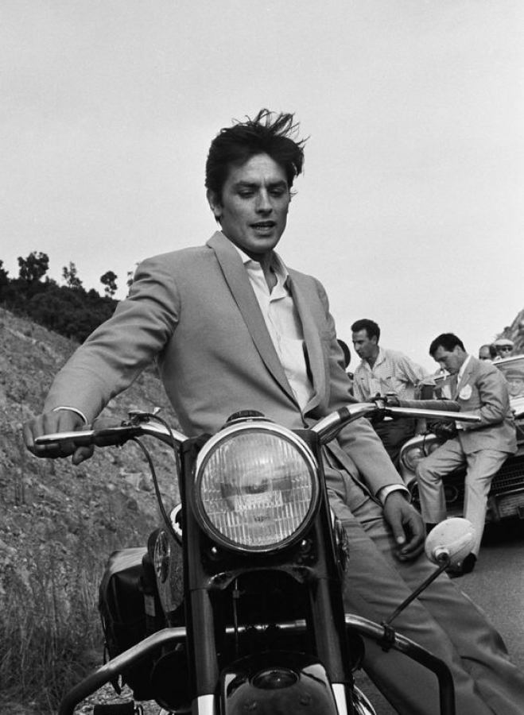
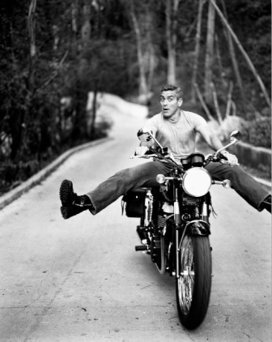
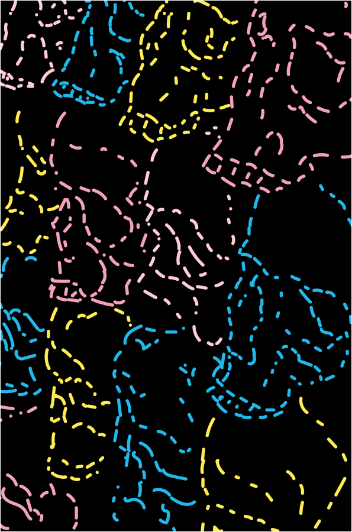

ЛУЧШИЕ РАБОТЫ
УЧЕНИКОВ НАШЕЙ
СТУДИИ
Галерея
Клуб рукоделия
для байкеров
ОЧУМЕЛЫЕ РУЧКИ

МИХАИЛ СКОРОСТНОЙ
ЧЕРЕПА
2020
Работа была выполнена
при помощи техники вышивания.
Композиция состоит из черепов
различных цветов, которые располежены
друг на друге.